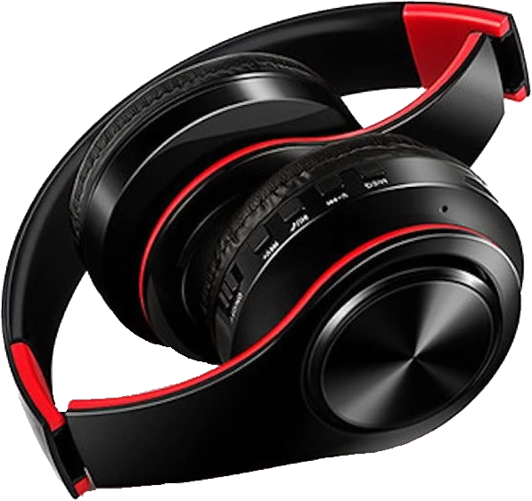
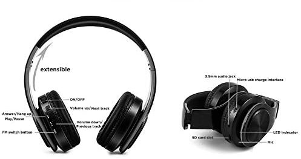
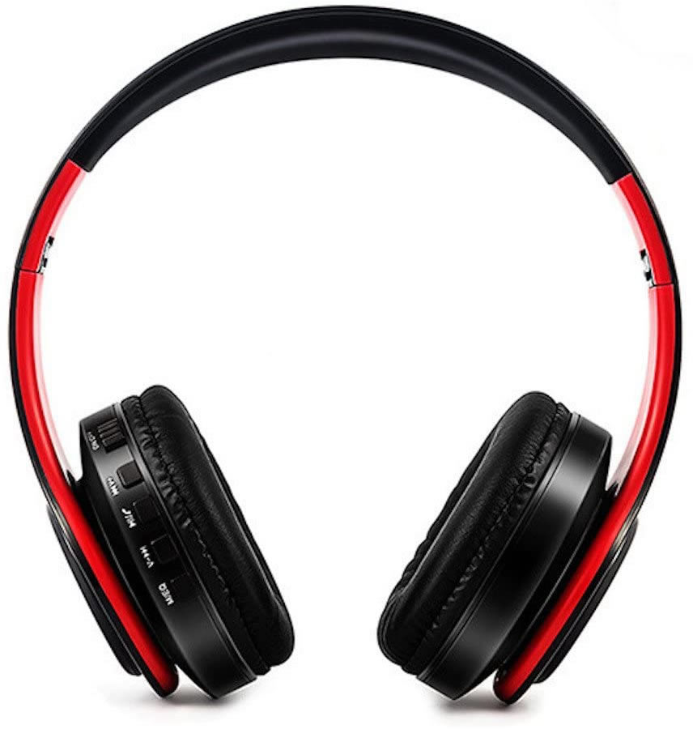

About

Noise Cancelling
Noise-cancelling headphones were originally created for airplane pilots to improve their comfort on long flights, and the first consumer versions were also intended for travellers.
The technology, known as active noise-cancellation (ANC), works by using microphones to pick up low-frequency noise and neutralise it before it reaches the ear. The headset generates a sound that's phase-inverted by 180 degrees to the unwanted noise, resulting in the two sounds cancelling each other out.
Comfortable
Designed by experts on the field of over 50 years, the RADIOPHON headphones are extremely comfortable and durable. Some headphone become irritating and cumbersome after a long time of wearing them, but our headphones are made of pure silicon, so it is just like wearing another layer of skin over your ears.
Affordable
Built with raw materials that are radily available, RADIOPHON makes the most affordable headphones available in the high-end market. You cannot find another one with the same sepcs that matches our price.
Parts

Details

Included
- Modern, functional design
- Great active noise cancelling
- Expanded, easy to use controls
- Great sound
Needed
- Companion App
- Extended Battery